来源：https://gpp6dmd27j.feishu.cn/docx/Wh0zddXlPoyfabx30uTc2Qgwn9b
先说下行业背景：2021年恒大等多家企业陆续暴雷，房地产周边及其下游企业受到了很大影响，房产中介收入锐减，下游装修、家居建材工厂及经销商很多倒闭破产跑路，房地产行业的遇冷使得家居建材行业也进入行业寒冬，同时期，房产中介平台开始入局装修行业，2021年7月贝壳完成了对圣都的全资收购，2023年10月份又以15.5亿完成了对爱空间装饰的收购，23年贝壳家装实现百亿营收。
在2022年以前，房产中介是不愿意和家居建材甚至是装修公司合作的，因为行业景气，房产中介赚的多，上到中介公司老板下到房产中介都没有意愿和动力给建材装修店面带单，相对于房产中介收入较高，装修建材行业跟单周期长，成交慢，相对来说比较繁琐，能够给到的提成又不是很多高，所以和房产中介谈合作比较困难，就算合作也只会愿意和一些大的装修公司进行合作，但是在2023年开始情况就不一样了，房产中介赚钱难了，也开始主动找新的收入增长点，开始主动找建材装修商家进行合作。
所以在去年对建材经销商进行帮扶的时候也有意识得通过房产中介渠道进行引流，在5月份和8月两场帮扶活动中都实现了一百多万的订单产值。
以下通过案例讲解来拆解如何和房产中介开展合作:
店面情况：广州某大家居装修公司，设计师、业务销售、监理等员工70人
帮扶时间：一个月
中介合作渠道数据：带看进店数据56户、成交转化11户、装修单值150万
房产中介除了像贝壳这种全国性的平台，还有大量的当地中介公司，他们以直营或加盟的形式存在，当然还有一些个体店，但是在被慢慢兼并加盟的状态。所以，我们选择合作的就是这种在当地连锁或直营大一些的中介公司。
1、合作洽谈
在谈合作的时候，不能和中介老板说通过这个渠道他能赚多少钱，因为这个收入相对于他的门店经营收入是微不足道的，而且很多老板会担心员工因为装修带客耽误了本职工作，我们一般会从三个角度沟通：
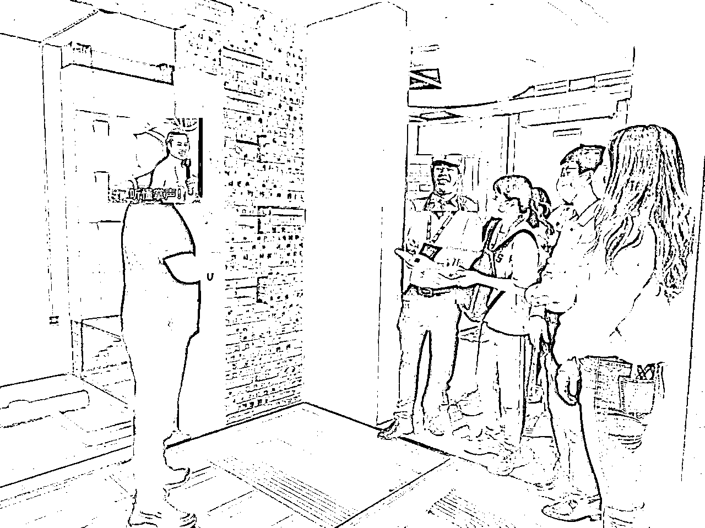
设计师在给房产中介讲解家装知识
2、合作机制：
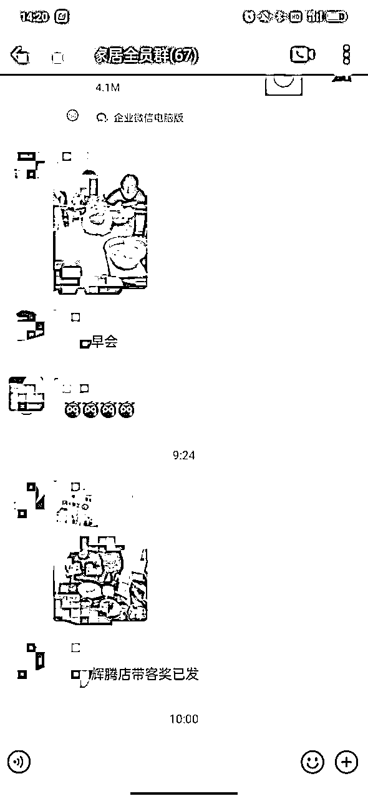
3、数据反馈流程：
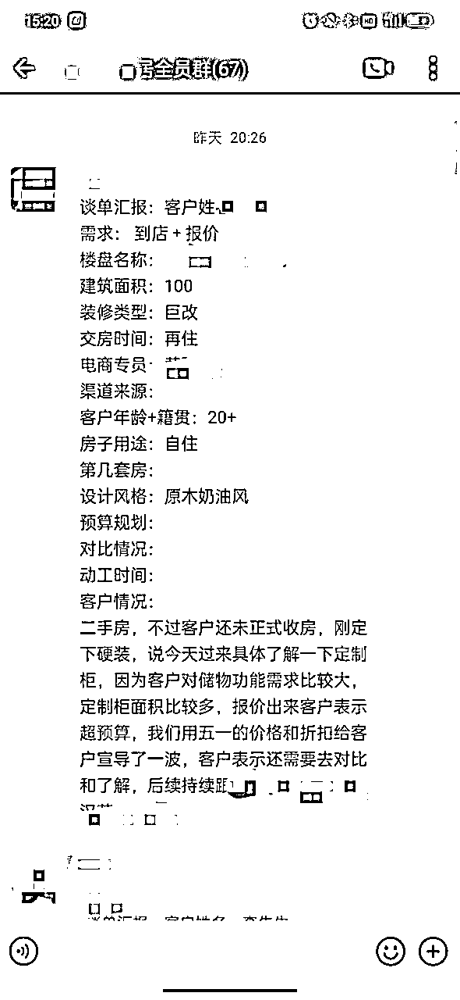
店面情况：山东下面的一个小县城，基装+全屋定制店面，销售2个设计师3个
帮扶时间：25天
中介合作渠道数据：报名数据105户、成交转化28户、装修单值160万
因为这个门店是一个县城门店，人员相对来说较少，不能够让他们和中介门店一一对接，所以前期就把中介全部聚集起来，做了两场宣讲，然后再和老板把所有门店全部都跑了一遍，每个店面逐个沟通，充分把他们手里所有的资源全部挖掘出来。
1、奖励设置：
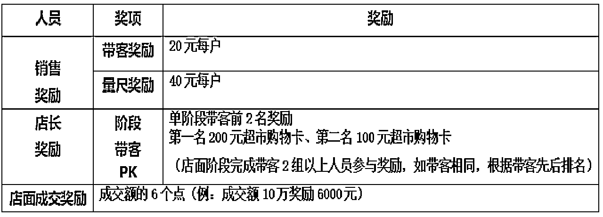
2、信息提报流程：
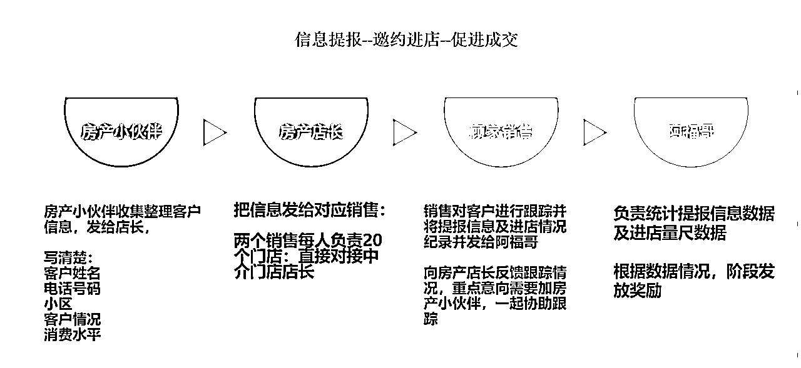
在活动中期，正好他们有一场月度会议，到时候所有中介都会到场，所以，我们就让他们给我们预留了30分钟时间，在现场统一集中售卡，最终实现现场售卡50户，最总售卡105户的成绩（售卡的机制和现场流程PPT在这里就不赘述了）
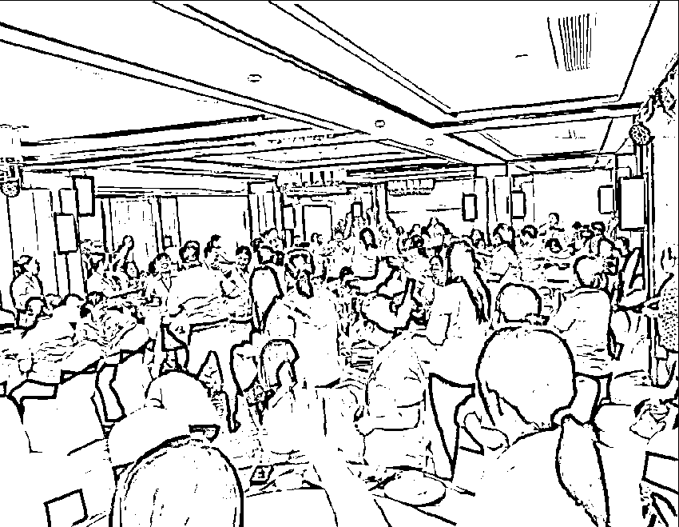
房产中介现场售卡
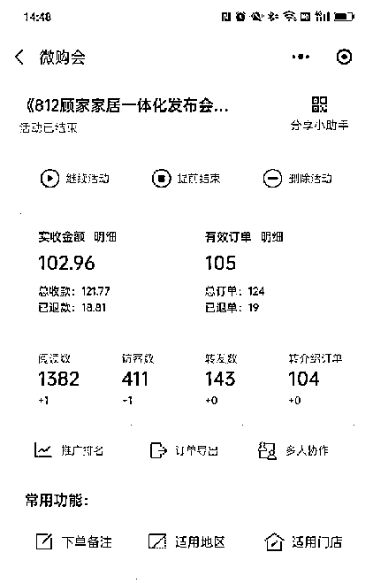
3、售卡客户统一活动爆破：
针对售卡客户，我们采用了在酒店统一落地的方式，因为我们的销售比较少，所以，在活动开始之前，对所有客户进行了集中回访，并对有邀约业主的房产中介进行集中签单培训，现场的成交环节交给房产中介来进行，因为他们和业主的关系更好，所以相对成交比较容易，我们的销售及设计师只进行疑难解答及对未成交的客户再次讲解。
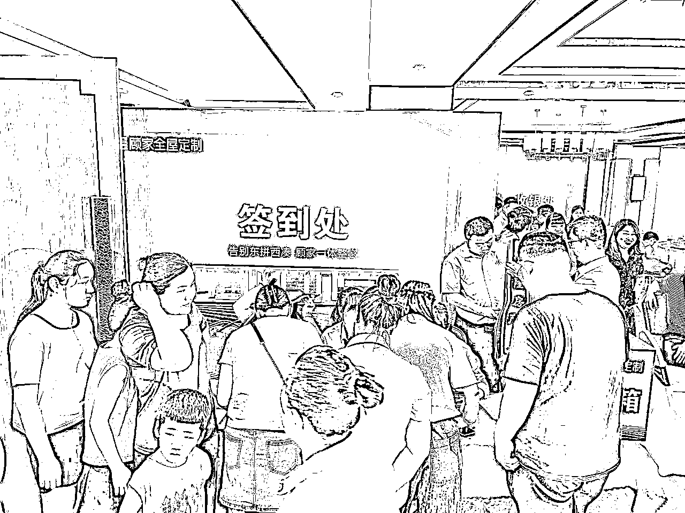
最后现场到场56户业主，共150人，现场签单23户，后期补单5户，这个成绩远远超出我们的预期，
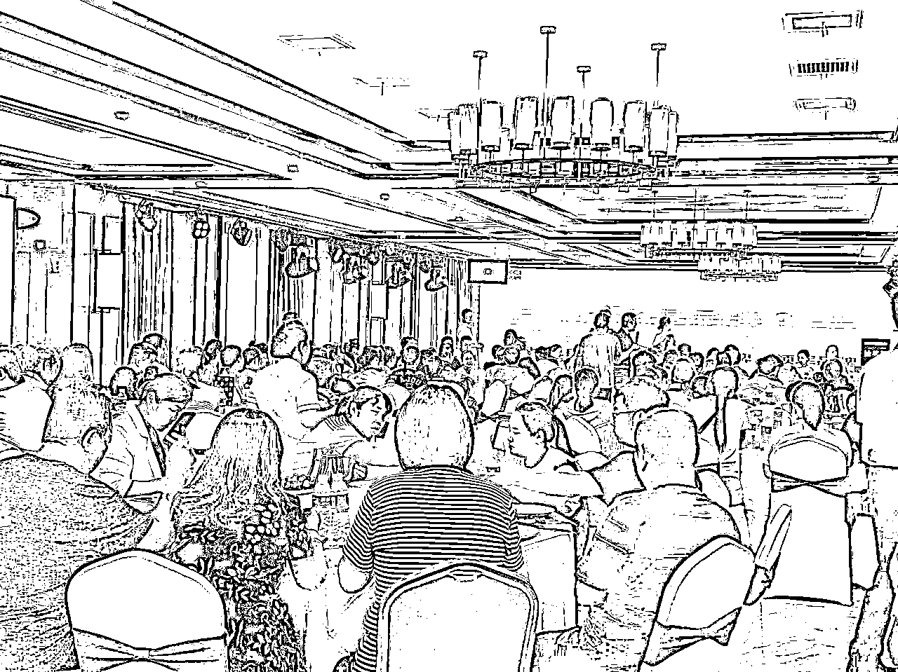
活动结束后，通过日常维护和群内的沟通，到现在为止，每个月还能带来5-7户的成交
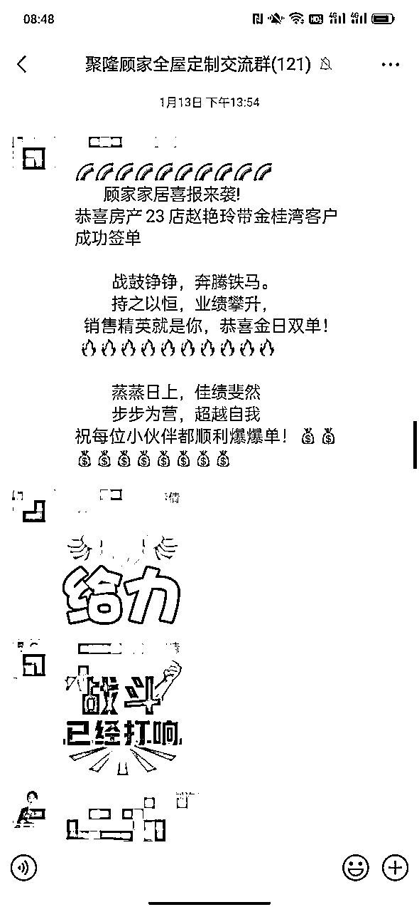
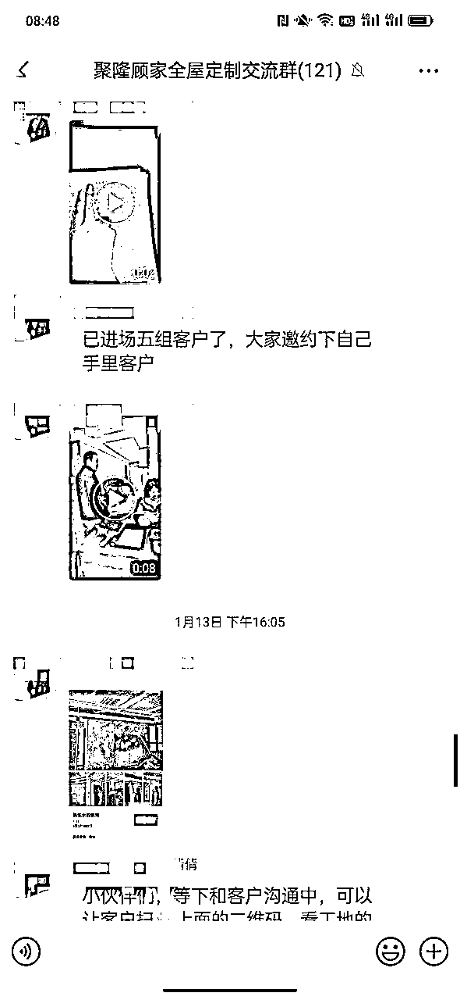
以上两个今天的实战案例，一个是大城市的中介渠道打法，一个是小县城中介渠道的合作方式，还有一些小细节欢迎大家链接沟通。